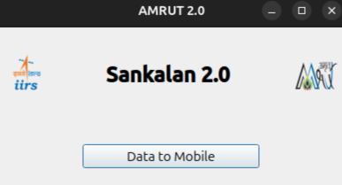
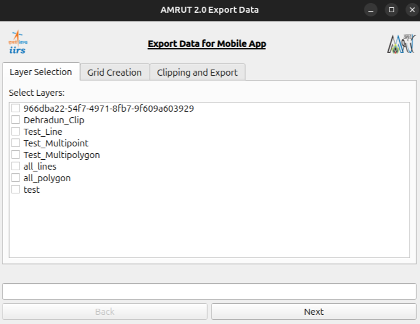
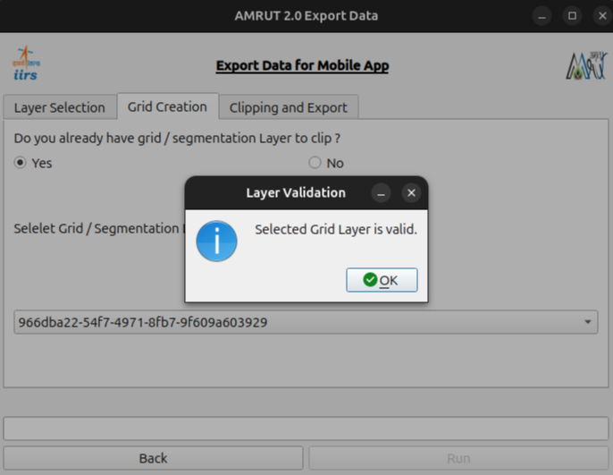
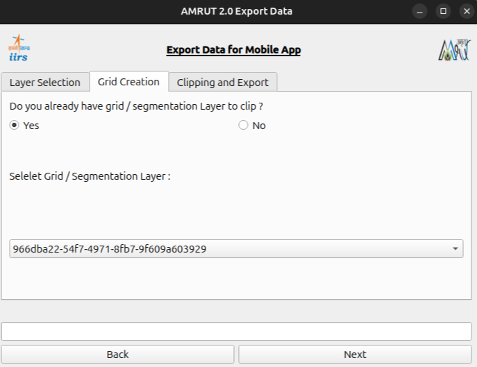
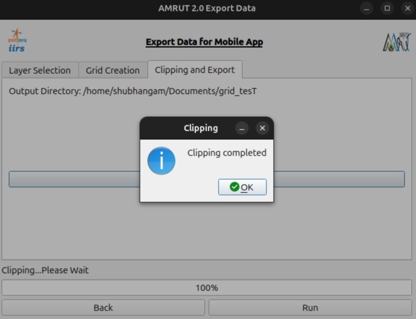

Overview
Sankalan 2.0 is a powerful data transfer plugin designed for seamless integration with QGIS. Developed by IIRS under ISRO, this plugin facilitates efficient data exchange and management, ensuring smooth workflows for geospatial applications. The main purpose of this plugin is to transfer data from a QGIS project to the Sankalan Mobile App to vet attributes on the ground. Target users are planning and administrative bodies under the AMRUT 2.0 Scheme of the Ministry of Urban and Housing Affairs.
Features
- Data Transfer for Mobile App: Enables exporting of geospatial data to the Sankalan Mobile App.
- Layer Validation and Clipping: Includes features for validating grid layers and clipping data.
- Seamless Integration: Works natively within QGIS.
- Efficient Workflow: Ensures data integrity and consistency for AMRUT 2.0 workflows.
System Requirements
- Minimum QGIS Version: 3.0
- QGIS Core Plugin: Processing
- Supported Operating Systems: Windows and Linux
Installation
- Clone the repository from GitLab:
git clone https://gitlab.com/iirs-amrut/amrut-qgis-plugin/
- Open QGIS.
- Navigate to Plugins > Manage and Install Plugins.
- Install the plugin by adding the cloned directory.
Usage
This plugin is specially designed and developed for data collection under AMRUT 2.0
The main purpose of this plugin is to transfer data to mobile application for vetting on ground.
- Open the plugin from the Plugins menu in QGIS.
- Use the main menu to select "Data to Mobile."
- Follow these steps:
➙ Layer Selection
- Select the grid or segmentation layer for clipping.
- Validate the selected layer to ensure compatibility.
➙ Grid Creation
Create a grid layer if no segmentation layer is available.
➙ Clipping and Export
- Specify an output directory for the exported files.
- Run the clipping process. A progress bar will indicate the process, and a confirmation dialog will appear upon completion.
Screenshots
1. Main Menu

2. Layer Selection

3. Layer Validation

4. Griding

5. Clipping

Contribution
We welcome contributions to enhance the plugin. Please follow these steps:
- Fork the repository on GitLab.
- Create a new branch for your feature or bug fix.
- Commit your changes and push them to your fork.
- Create a merge request with a detailed description.